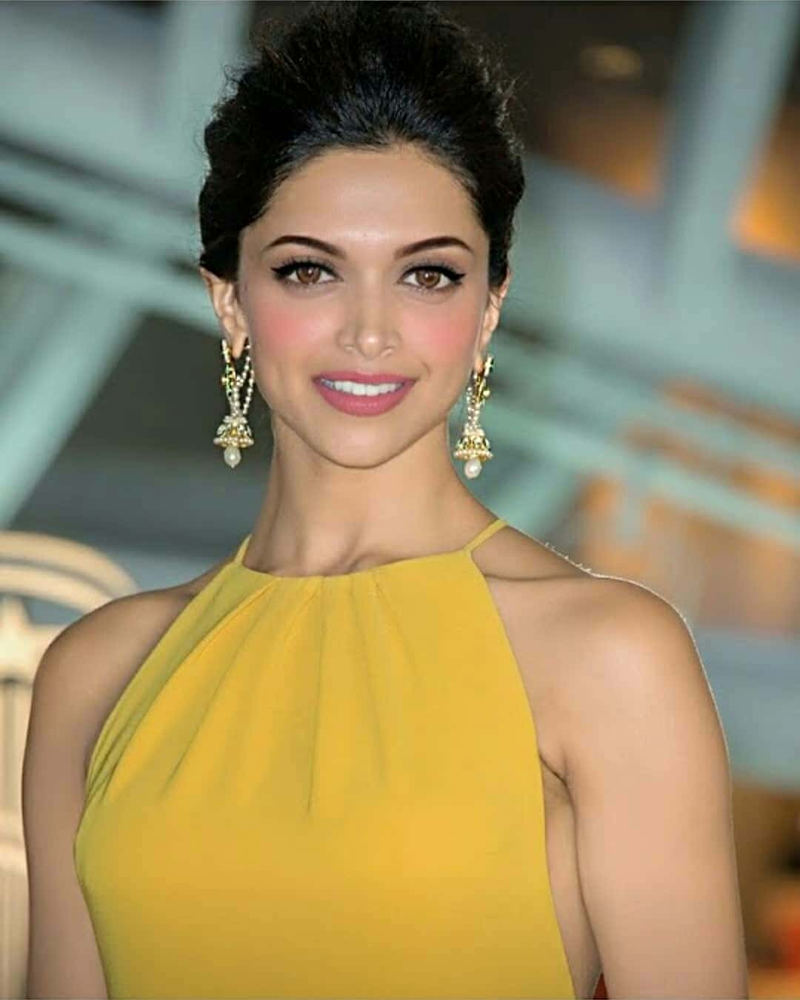

Deepika Padukone - Bollywood Actress
-
Deepika Padukone is an Indian actress who works in Hindi films. One of the highest-paid actress in India. She got three FilmFare Awards.
She is the daughter of the badminton player of Prakash Padukone, she was born in Copenhagen (5th January, 1986) and raised in Banglore in India. During her teenager life, she was a player of badminton and played in national level championships but her dream of fashion model, she left her career in sports.
In 2006, she started working in film roles.- First Filmfare Award in 2007 for Best Actress and Best Female Debut
- Most Entertaining Actor in a Romantic Film – Female in 2012
- Most Entertaining Actor (Film) – Female in 2012
- Most Entertaining Actor in a Comedy Film – Female in 2013
- CNN-IBN Indian of the Year in 2013
- Most Entertaining Actor in a Drama Film – Female in 2015
- CNN-IBN Indian of the Year in 2019
-
Padukone announced in 2006 that she would make her film debut with Aishwarya, a Kannada film directed by Indrajit Lankesh.
The romantic comedy was a remake of the Telugu film Manmadhudu, and she was cast in the title role opposite the actor Upendra. The film proved to be a commercial success. RG Vijayasarathy of Rediff.com was appreciative of Padukone's screen presence but added that "she needs to work on her emotional scenes."
In preparation for her role, Padukone watched several films of actresses Helen and Hema Malini to study their body language.[30] Her voice was dubbed by the voice artist Mona Ghosh Shetty.
For one of the songs in the film, "Dhoom Taana," Padukone drew upon Indian classical dance, and according to Dorling Kindersley, "mesmeriz[ed] audiences" by using hasta mudras (hand gestures).
Om Shanti Om was a commercial success, and emerged as the highest-grossing film of the year, with a global revenue of ₹1.49 billion (US$20 million). Taran Adarsh of the entertainment portal Bollywood Hungama opined that she had "all it takes to be a top star", and she was awarded with the Filmfare Best Female Debut Award and received her first Filmfare Award for Best Actress nomination.
Along with acting, she has written opinion columns and has been involved with women's health and fitness magazines. She has also supported charitable organisations, and has performed for stage shows. In 2009, she was hired by Hindustan Times to write weekly columns for their lifestyle section; through these columns she interacted with her fans and passed details of her personal and professional life.
Padukone took part in the opening ceremony of the third season of the Indian Premier League at the DY Patil Stadium in Navi Mumbai.[178] Three years later, she performed alongside Shah Rukh Khan, Katrina Kaif, and Pitbull for the sixth edition of the Indian Premier League.
She has also been outspoken on issues such as feminism and has said, "New feminism isn't about being aggressive; it's about reaching the top yet being soft. It's about being you – feminine, strong and full of will power."
In a 2015 interview, Padukone spoke about her personal experience of overcoming depression, and in October that year she formed a foundation to create awareness on mental health in India, named The Live Love Laugh Foundation.
Padukone became the brand ambassador for the NGO Indian Psychiatric Society and on her foundation's first anniversary, the two organisations collaborated to launch the video and poster campaign #DobaraPoocho dedicated to victims and survivors of depression.Padukone will next reunite with Shah Rukh Khan for Yash Raj Films's action film Pathan. She will star opposite Prabhas in an as-yet untitled science fiction film from filmmaker Nag Ashwin, and star and produce in a remake of the American comedy film The Intern. She will also star in Siddharth Anand's action film Fighter, alongside Hrithik Roshan, and will portray Draupadi in a retelling of the Mahabharata from her character's perspective, which she will also produce.
{kind=link}
Popular Movies
Naina Talwar (Deepika Padukone) is a medical student absorbed in her studies. She tops her classes but feels like an outcast due to her introverted nature. An encounter with an old classmate, Aditi Mehra (Kalki Koechlin), makes her realize that she wants more from life than high marks. Thus, she makes an impulsive decision to follow Aditi on a hiking trip into the Himalayas, up to Manali. During the hike, she renews her friendship with other former classmates, Kabir "Bunny" (Ranbir Kapoor) and Avinash "Avi" Shiv (Aditya Roy Kapur). Bunny is a charmer whose dream is to wander and discover the world and has no interest in ever settling down, while Avi is a playboy and is addicted to beer.
Throughout the trek, Bunny and Naina grow closer. One night, the two climb a mountain and Naina sees a new side of Bunny, causing her to grow feelings for him. At the end of the trip, Naina is close to telling Bunny that she has feelings for him, but is interrupted by Avi who reveals Bunny was accepted into the graduate school of journalism at Northwestern University in Chicago. Naina realizes that love and marriage have no part in Bunny's plans and remains silent but is happy for him as he is following his passion.
Eight years later, Naina has finished medical school and is now working in a clinic. Naina's feelings for Bunny grow once again, and Bunny finds himself becoming attracted to Naina. However, she doesn't want to get her heart broken again, leading herself to avoid hang-outs with Bunny.
Throughout the trek, Bunny and Naina grow closer. One night, the two climb a mountain and Naina sees a new side of Bunny, causing her to grow feelings for him. At the end of the trip, Naina is close to telling Bunny that she has feelings for him, but is interrupted by Avi who reveals Bunny was accepted into the graduate school of journalism at Northwestern University in Chicago. Naina realizes that love and marriage have no part in Bunny's plans and remains silent but is happy for him as he is following his passion.
Eight years later, Naina has finished medical school and is now working in a clinic. Naina's feelings for Bunny grow once again, and Bunny finds himself becoming attracted to Naina. However, she doesn't want to get her heart broken again, leading herself to avoid hang-outs with Bunny.
In Singhal (modern-day Sri Lanka), princess Padmavati (Deepika Padukone) accidentally wounds Rajput ruler of Mewar Maharawal Ratan Singh while hunting in a forest. As she treats him, he reveals that he has traveled to Sinhala to acquire rare pearls for his only wife Nagmati. Eventually, the two bond and fall in love. Ratan Singh asks for Padmavati's hand in marriage, she agrees, and with permission from her father, they are married.
Padmavati journeys to Mewar with Ratan Singh and is blessed by his royal priest, Raghav Chetan. Chetan later intrudes into the palace secretly and spies upon an intimate moment between Ratan and Padmavati, and is subsequently banished. He then travels to Delhi and informs Alauddin of Padmavati's beauty. Alauddin, who is fixated with having anything that is exceptional, invites the Rajputs to Delhi, but his invitation is rejected. Enraged, he lays siege to Ratan Singh's capital Chittor. After six months of an unsuccessful siege, Alauddin feigns peace on account of Holi and is allowed to enter Chittor, where he meets Ratan Singh. He asks to see Padmavati; Ratan Singh grants this request, but only momentarily while preventing Alauddin from seeing her face. Ratan Singh is tricked by Khilji and is taken to Delhi as a prisoner.
Padmavati journeys to Mewar with Ratan Singh and is blessed by his royal priest, Raghav Chetan. Chetan later intrudes into the palace secretly and spies upon an intimate moment between Ratan and Padmavati, and is subsequently banished. He then travels to Delhi and informs Alauddin of Padmavati's beauty. Alauddin, who is fixated with having anything that is exceptional, invites the Rajputs to Delhi, but his invitation is rejected. Enraged, he lays siege to Ratan Singh's capital Chittor. After six months of an unsuccessful siege, Alauddin feigns peace on account of Holi and is allowed to enter Chittor, where he meets Ratan Singh. He asks to see Padmavati; Ratan Singh grants this request, but only momentarily while preventing Alauddin from seeing her face. Ratan Singh is tricked by Khilji and is taken to Delhi as a prisoner.
While travelling to Sironja, an emissary from Bundelkhand requests Bajirao's help to fight invaders. She reveals herself to be Mastani (Deepika Padukone), the daughter of the Hindu Rajput king Chhatrasal and his Persian Muslim consort Ruhani Begum. Impressed by her skills as a warrior, Bajirao assists her with his army and defeats the invaders. Chhatrasal is overjoyed and insists Bajirao to spend Holi with them. Mastani and Bajirao fall in love during this time and he gives her his dagger, unaware that it is a symbol of marriage among the Rajputs. Back home in Pune, Kashibai greets Bajirao with a tour of their newly built Shaniwar Wada and the Aaina Mahal (Hall of Mirrors), which allows her to see him from her room.
Determined to pursue her love, Mastani arrives in Pune but is treated harshly by Bajirao's mother Radhabai and accommodated in the palace for courtesans, as Radhabai refuses to accept her as a daughter-in-law. Mastani tolerates this and adamantly expresses her desire to be with Bajirao; Bajirao chides in her persistence, reminding her he is already married and will never fully be hers; his court will also never respect her. Mastani agrees to these conditions so Bajirao declares her his second wife.
Once Bajirao leaves, his mother and Nana Saheb imprison Mastani and her son. After Bajirao receives the news, he singlehandedly defeats Nasir Jung's army in his rage but is fatally injured. At Bajirao's deathbed, Kashibai sends a letter pleading with his mother to release Mastani so that he recovers. Nana Saheb burns the letter, though Mastani's son is set free. Bajirao, delirious from his illness, hallucinates and dies as Kashibai helplessly watches; at the same time, Mastani dies in captivity. The ill-fated lovers are united in death.
Determined to pursue her love, Mastani arrives in Pune but is treated harshly by Bajirao's mother Radhabai and accommodated in the palace for courtesans, as Radhabai refuses to accept her as a daughter-in-law. Mastani tolerates this and adamantly expresses her desire to be with Bajirao; Bajirao chides in her persistence, reminding her he is already married and will never fully be hers; his court will also never respect her. Mastani agrees to these conditions so Bajirao declares her his second wife.
Once Bajirao leaves, his mother and Nana Saheb imprison Mastani and her son. After Bajirao receives the news, he singlehandedly defeats Nasir Jung's army in his rage but is fatally injured. At Bajirao's deathbed, Kashibai sends a letter pleading with his mother to release Mastani so that he recovers. Nana Saheb burns the letter, though Mastani's son is set free. Bajirao, delirious from his illness, hallucinates and dies as Kashibai helplessly watches; at the same time, Mastani dies in captivity. The ill-fated lovers are united in death.
The film is based on the real-life story of acid attack survivor Laxmi Agarwal.
A reporter named Alka meets Amol Dwivedi, the creator of a foundation for acid attack survivors, and informs him about Laxmi Agarwal, one such survivor fighting for a ban on the sale of acid. Laxmi is looking for employment, and Amol employs her at his organization.
In April 2005, Laxmi is attacked with acid in a busy market street in New Delhi. The police investigate – based on Laxmi's and her boyfriend Rajesh's testimony, they suspect Basheer "Babbu" Khan, a family friend of Malti's, and his brother's wife Parveen Shaikh. The police arrest Babbu after triangulating his phone signal in the same area as the attack, while Laxmi undergoes a series of surgeries to reconstruct her severely damaged face. Laxmi's parents work as domestic help in Shiraz's house; she helps financially with Laxmi's treatment and hires Archana Bajaj to be her lawyer.
It is revealed that Basheer planned the acid attack on Laxmi in jealousy, and carried it out with help from Parveen. In October 2013, the Delhi High Court rejects Basheer's appeal, keeping the attackers in jail. The film ends with another acid attack in December 2013, and laments that despite the new regulations and media exposure, the frequency of acid attacks has not decreased, while acid is still bought and sold freely in India.
A reporter named Alka meets Amol Dwivedi, the creator of a foundation for acid attack survivors, and informs him about Laxmi Agarwal, one such survivor fighting for a ban on the sale of acid. Laxmi is looking for employment, and Amol employs her at his organization.
In April 2005, Laxmi is attacked with acid in a busy market street in New Delhi. The police investigate – based on Laxmi's and her boyfriend Rajesh's testimony, they suspect Basheer "Babbu" Khan, a family friend of Malti's, and his brother's wife Parveen Shaikh. The police arrest Babbu after triangulating his phone signal in the same area as the attack, while Laxmi undergoes a series of surgeries to reconstruct her severely damaged face. Laxmi's parents work as domestic help in Shiraz's house; she helps financially with Laxmi's treatment and hires Archana Bajaj to be her lawyer.
It is revealed that Basheer planned the acid attack on Laxmi in jealousy, and carried it out with help from Parveen. In October 2013, the Delhi High Court rejects Basheer's appeal, keeping the attackers in jail. The film ends with another acid attack in December 2013, and laments that despite the new regulations and media exposure, the frequency of acid attacks has not decreased, while acid is still bought and sold freely in India.
Piku Banerjee (Deepika Padukone) is a Bengali architect residing in Delhi with her 70-year-old widowed father, Bhashkor (Amitabh Bachchan). Bhashkor is a hypochondriac with chronic constipation, who traces every problem to his bowel movements. His habits often lead to quarrels with Piku, the servants (Bodan), and Chhobi Mashi (Moushumi Chatterjee), Piku's maternal aunt, who often visits them. Piku loves her father and, as her mother is deceased, takes good care of him but is often extremely irritated by his eccentricities. Her colleague, Syed Afroz (Jisshu Sengupta) is a good friend, and she is a regular client of Syed's friend, Rana Chaudhary's (Irrfan Khan) taxi business. Regularly stressed both by her job and by her father's finicky behavior, Piku often quarrels with Rana's taxi drivers during her morning commute, leading to several car crashes.
The next day, everyone discovers that Bhashkor has died in his sleep, probably from sleep apnea or cardiac arrhythmia. Piku states that he always wanted a peaceful death. She returns to Delhi, where she arranges his funeral. There, Dr. Srivastava (Raghubir Yadav), Bhashkor's doctor, reveals to her that Syed, too, has constipation and Bhashkor knew about it for a long time. A few days later, she pays up whatever due she owes Rana. She renames the Delhi house "Bhaskor Villa" in her father's memory and the maid, who had left due to Bhashkor's tantrums, returns to work. The film ends with a scene of Piku playing badminton with Rana in the courtyard in front of her house.
The next day, everyone discovers that Bhashkor has died in his sleep, probably from sleep apnea or cardiac arrhythmia. Piku states that he always wanted a peaceful death. She returns to Delhi, where she arranges his funeral. There, Dr. Srivastava (Raghubir Yadav), Bhashkor's doctor, reveals to her that Syed, too, has constipation and Bhashkor knew about it for a long time. A few days later, she pays up whatever due she owes Rana. She renames the Delhi house "Bhaskor Villa" in her father's memory and the maid, who had left due to Bhashkor's tantrums, returns to work. The film ends with a scene of Piku playing badminton with Rana in the courtyard in front of her house.